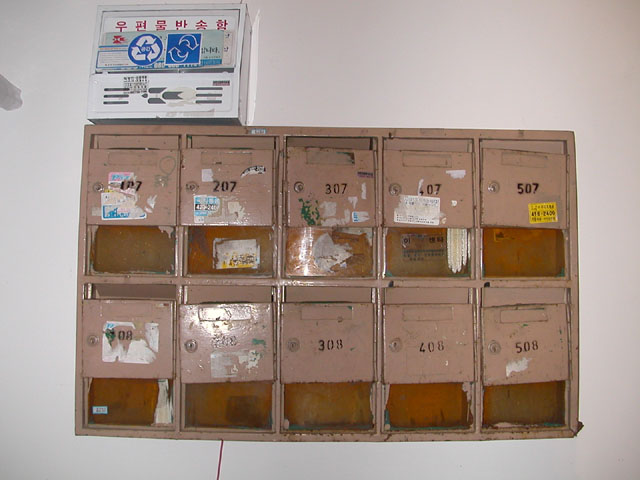

|
* 송전초등학교
제목 / 러브러브 히스토리
설치장소 / 학교운동장과 학교 주변의 몇몇 장소(전단지를 보고 찾아다니는 작업)
재료 / 주인공 남녀의 사진 및 에피소드에 관련된 오브제
크기 / 각 에피소드마다 다름
잠실의 저층 아파트 단지는 이제 흔적도 없이 사라질 것이며 지금의 자리에는 높고 번쩍거리는 주택단지가 새롭게 생겨날 것이다. 모든 번쩍거리는 새것은 곧 시간을 덧쓰면서 낡고 버려질 것으로 변한다. 20년이 못되는 시간 전에는 잠실 주공 아파트도 그런 새것이었다. 곰팡이도 거미줄도 중국집 스티커도 하나 없는 깨끗하고 산뜻한 새것이었다. 모든 개발의 논리는 번쩍거리는 새것에게 스포트라이트를 던진다. 언제나 새것에게 자리를 내놓아야 하는 낡은 놈인 버려질 아파트를 이사 가는 사람들의 짐 속에서 채 챙겨지지 못한 물건들 그리고 인간의 기억이란 것과 연관시키게 되었다.
기억 속을 더듬어 보면 충분히 의미 있었던 사소한 사건 들, 말들, 웃음과 눈물들은 시간과 현실감각이라는 몇 개의 명목들을 선두로 저 멀리 순위 안에 들지 못한 채 방치되다가 희미해진다. 한 개인에게 진정으로 의미 있는 것은 무엇일까? 버려진 물건, 버려질 물건에서 찾고자 하는 것은 바로 의미 있음에 대한 물음이다.
|

* 석수동 Stone and Water
수거한 우체통(열 집이 사용할 수 있게 되어있는)에 헤드셑을 연결, 문을 열면 장치된 전구에 불이 들어오면서 들어있는 헤드셑으로는 녹음된 인터뷰들을 들을 수 있도록 한다. 모든 칸을 이렇게 사용하는 것은 아니며 녹음된 인터뷰를 들을 수 있는 칸이 4-5개, 그리고 나머지의 칸에는 채집한 물건들의 이미지 컷을 넣는다. (크기가 커서 우체통에 집어넣을 수 없는 물건일 경우 사진으로 대신한다.)
유지현, 김보현, 오석원, 김정아, 김용희, 김은미, 임희령
|